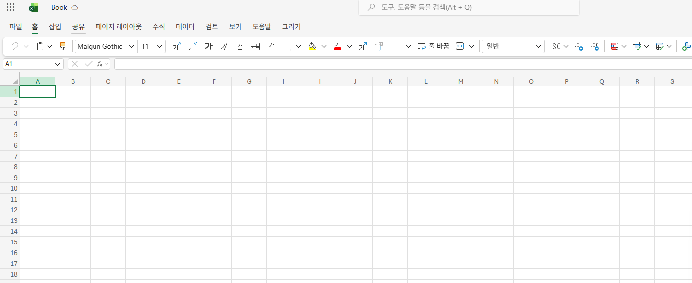
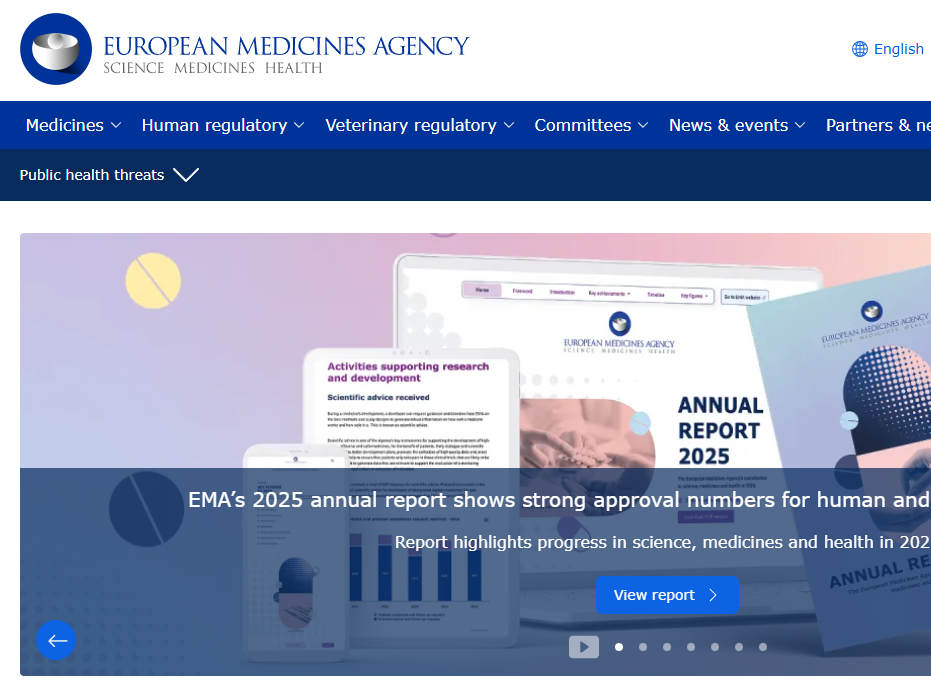
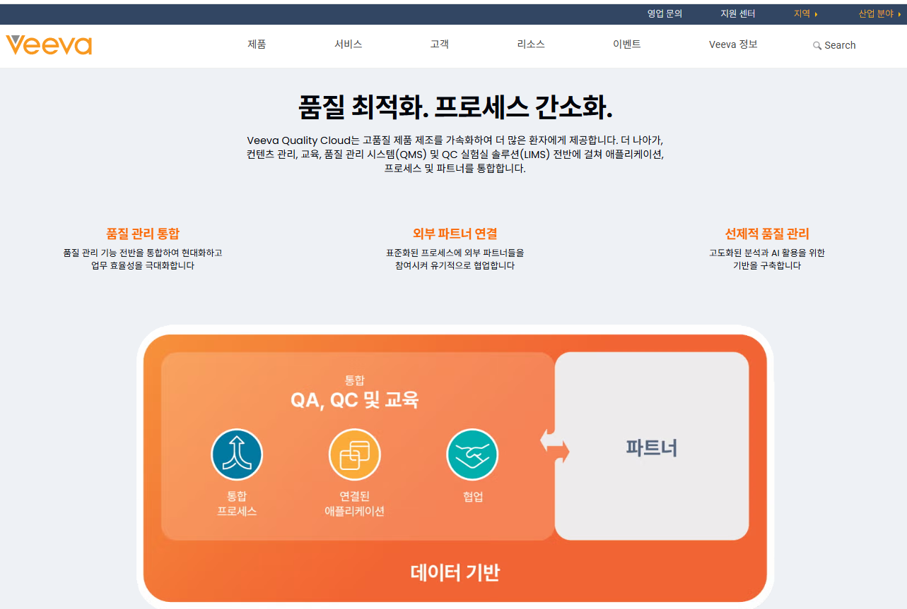
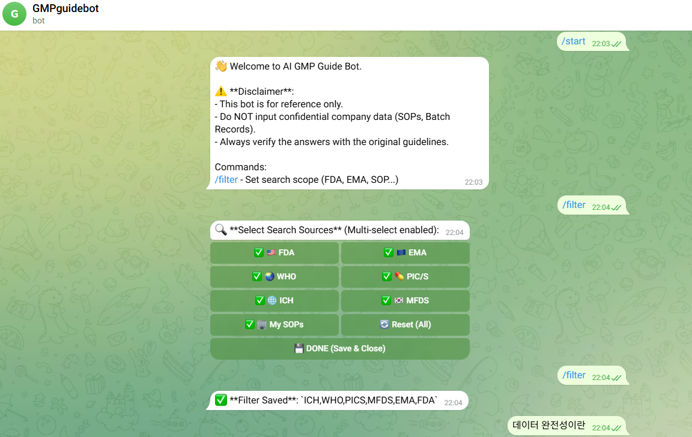
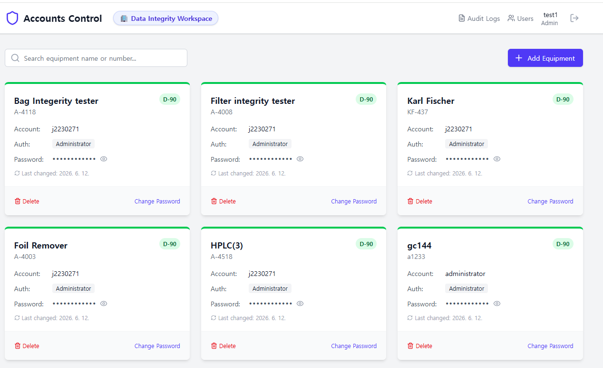

완료
스프레드시트 오딧 모듈 도입
스프레드시트 실시간 변경 이력 기록을 위한 감사추적 모듈 도입 및 서드파티 기술 검증 수행
Data Integrity × Digital Transformation
Driving Process Digitalization and Quality Assetization, Hero.
제약·바이오 현장 실무 경험과 IT/DI 거버넌스 역량을 연결하여,
단순한 규제 대응을 넘어
신뢰할 수 있는 데이터 기반의 디지털 품질 체계를 설계합니다.
Connecting biopharma field experience with IT/DI governance expertise to design a reliable, data-driven digital quality system beyond simple compliance.
생명공학 학사 수강부터 시작하여 QC 실무를 거쳐 IT/DI 컴플라이언스 전문가로 성장하기까지의 여정입니다.
생명공학 전공
바이오의약품 핵심 이론 함양
병장 수송특과 만기전역
생명공학 학사 취득
야구동아리 활동 부회장 역임
품질관리(QC) 사원
HPLC, GC 정밀
기기분석 실무
SQLD, 리눅스마스터 취득
통계 및 GMP 전문 교육 수료
IT팀 선임
GxP 시스템 운영, EMA/FDA 글로벌 실사 대비
전사 DI 구축 및 CSV 수행
AX디스커버리 프로젝트 진행
Veeva 시스템 운영 및 개선
QC 실무에서 기여한 현장 지식과 글로벌 IT/DI 가이드라인에 대한 전문성을 결합한 3대 핵심 경쟁력입니다.
QC 현장 실무 지식을 녹여낸 디지털 전환 지원
글로벌 가이드라인 준수 및 실사 수검 대응
SCADA, LMS, EDMS, QMS 운영 및 AI 품질 전환 연구
DI팀 선임
SCADA, LIMS, EDMS, QMS 시스템 운영 및 품질 시스템 AX(인공지능 전환) 프로젝트 수행
IT팀 선임
거버넌스 표준화 및 인프라 고도화
IT팀 선임
시스템 보안 고도화 및 운영 최적화
IT팀 선임
DI 감시 운영 체계 및 기초 인프라 확립
품질관리(QC) 사원
QC 고도화 및 데이터 무결성 강화
품질관리(QC) 사원
품질관리 기초 확립
기업지원단 사원
기업과 대학 내 실험실 협업 연결

스프레드시트 실시간 변경 이력 기록을 위한 감사추적 모듈 도입 및 서드파티 기술 검증 수행
무선 AP망 설계를 통한 Standalone 설비 백업 자동화 및 HMI Windows 10 마이그레이션·CSV 수행

FDA/EMA 실사를 대비한 전사 공용 계정 정비 및 GxP 작업 절차서(SOP/WI) 무결성 개정

Veeva Vault Owner 권한 기반 컨피규레이션 제어 및 Audit Trail 프로세스 추가·CSV 검증 수행
신규 사이트 네트워크 아키텍처 검토 참여 및 스마트 팩토리 기반 IT 인프라 설계 지원
EU GMP Annex 11/22 및 Chapter 4 최신 개정 대비 데이터 무결성 Gap 분석 및 표준 정비 지원

대화형 인터페이스를 활용한 글로벌 GMP 및 DI 가이드라인 실시간 탐색 및 출처 인용 시스템 연구

Gemini 2.0 API 기반 GxP 감사 추적 로그 이상 징후 스캔 및 무결성 평가지원 프로토타이핑

Supabase DB 및 React 기반 cGMP 컴플라이언스 대응 계정 정보 및 암호 정책 체계적 관리 시스템 연구
SK바이오사이언스의 글로벌 CDMO 확장 국면에서, 완벽한 DX 생태계 구축을 리드해 나갈 단계별 성과 목표입니다.
입사 후 즉시 전력으로서 Veeva 시스템(LMS, QMS, EDMS)의 운영 및 지속적인 기능 개선을 담당하고, 품질 프로세스 자동화를 위한 AI Agent 서비스 발굴에 즉각 투입되겠습니다. 이와 동시에 신규 도입 설비에 대한 GAMP 5 기반 CSV(컴퓨터 시스템 밸리데이션) 플랜 수립과 검증을 수행하고, 현장 친화적인 업무 재설계(PI)를 주도하여 대규모 인프라 확장 속에서도 글로벌 규제 준수와 생산성 극대화를 달성하겠습니다.
제조설비(SCADA/MES)와 품질 시스템(LIMS/SDMS, Veeva QMS/EDMS) 간의 단절된 데이터를 끊김 없이 연동하는 '통합 데이터 파이프라인'을 확립하겠습니다. 기존 시스템 개선 경험을 바탕으로 수동 데이터 개입을 최소화한 실시간 품질 검증 자동화를 구현하겠습니다. 이를 통해 실시간 품질 모니터링 체계를 완성하고 휴먼 에러를 예방하여 데이터 신뢰성을 극대화하겠습니다.
축적된 통합 품질 빅데이터를 자산화하여, 공정 이상을 선제적으로 예측하고 방어하는 AI 적용(AX) 기반 예방 품질 관리 로드맵을 실행하겠습니다. 단기 단계에서 발굴하고 안착시킨 AI Agent와 개인 연구로 진행했던 LLM 및 감사 추적 자동 분석 PoC 기술을 엔터프라이즈 환경에 맞게 고도화하고, 글로벌 규제(EU GMP Annex 11/22 등)에 부합하는 지능형 시스템을 안착시켜 SK바이오사이언스의 DX 핵심 리더로 성장하겠습니다.
방대한 품질 데이터를 확장성 있게 다루기 위해 AWS 등 클라우드 아키텍처 역량을 심화하겠습니다. SK바이오사이언스의 글로벌 사이트(안동, 송도, IDT Biologika) 간 GxP 클라우드 환경의 데이터 정합성을 검증하고, 대규모 통합 데이터 플랫폼을 안정적으로 관리할 수 있는 기술적 기반을 완성하겠습니다.
최신 데이터 분석 및 머신러닝 기법을 지속 학습하여 SK바이오사이언스의 데이터 기반 의사결정을 기술적으로 뒷받침하겠습니다. 기존 보유한 SQLD 역량과 Python, GenAI API 활용 경험을 넘어, 실제 공정 품질 트렌드를 실시간으로 분석해 낼 수 있는 엔터프라이즈급 AI 검증 기술력을 획득하겠습니다.
ISPE(국제제약기술협회) 활동 및 FDA/EMA의 최신 데이터 무결성 지침 개정안을 지속 모니터링하여 글로벌 스탠다드 변화에 선제적으로 대처하겠습니다. 나아가 변화하는 규제 기준을 시스템에 즉각 반영하는 것을 넘어, 사내 유관 부서를 위한 맞춤형 DI 교육을 기획하며 전사적인 품질 마인드셋 제고에 기여하겠습니다.
생명공학 학사 졸업
병장 수송특과 만기전역
이과계열 졸업
2026.03
한국정보통신자격협회
2025.01
한국정보통신진흥협회
2024.04
한국데이터진흥원
2022.09
130점 / IM3
2020.06
800점
2020.05
대한상공회의소
Coursera 수료
통계 기초, 활용 및 파이썬 데이터 분석 과정 수료
GMP 규정 및 품질관리, 제약공정, 밸리데이션 전문과정 이수
바이오의약품 제조 및 GMP 품질관리 실무교육 이수
SK바이오사이언스의 성공적인 DX/AX 전환을 준비하는 파트너로서 기여하겠습니다.
연락은 아래 이메일로 부탁드립니다.